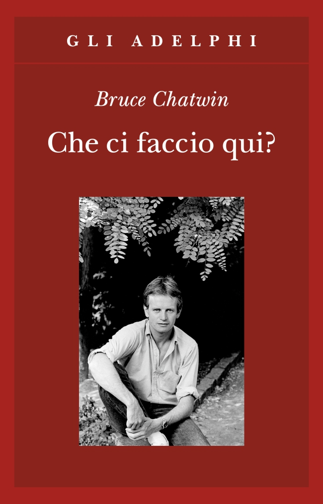
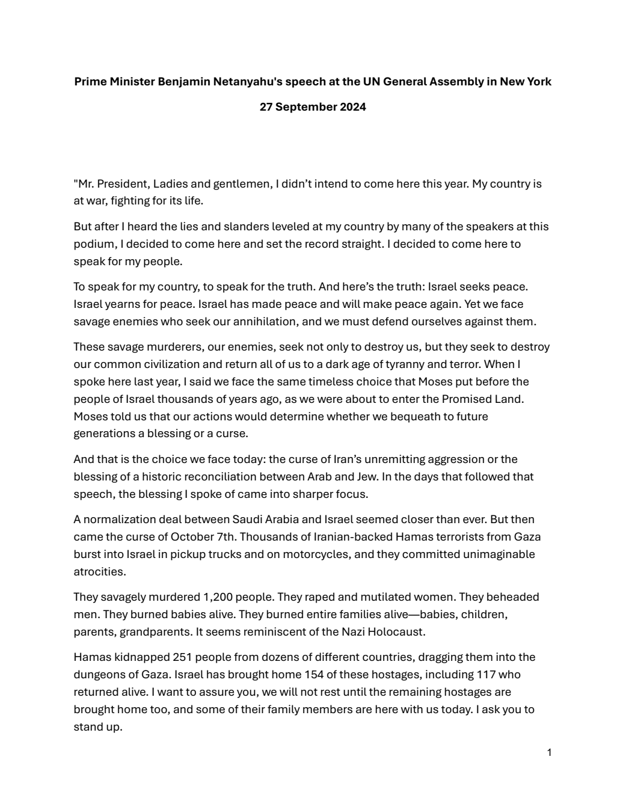
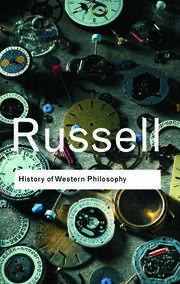
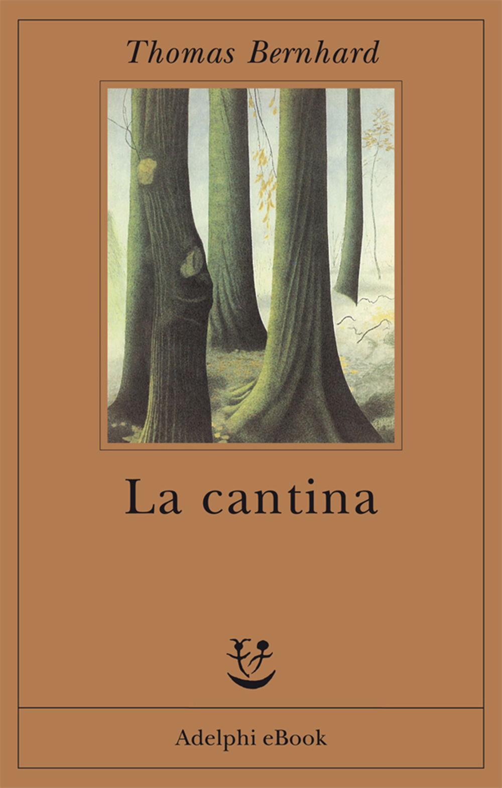
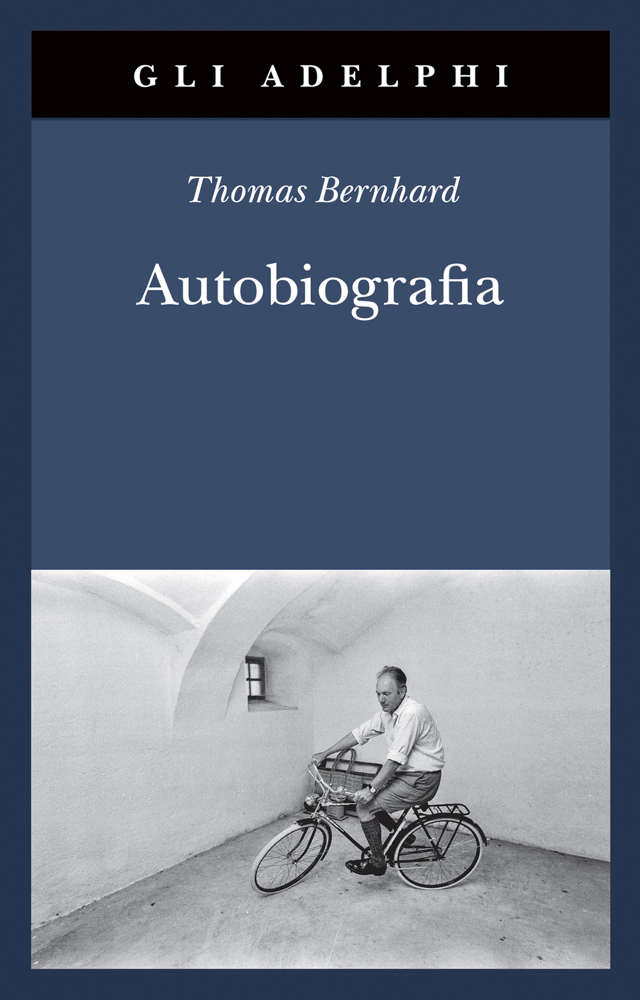

1:05:02 · 18 OPERE
La filosofia, la parola o la comunicazione come buffonate a servizio della disinformazione.
Il filo del discorso
La domanda che richiama Che ci faccio qui? di Bruce Chatwin apre una riflessione sulla fatica di parlare quando il confronto sembra sostituito da etichette e spettacolo. Il relatore prende spunto da un dibattito dell’Oxford Union e sostiene che il prestigio di un nome possa impedire di esaminare ciò che accade realmente. Così è, se vi pare diventa una formula polemica per descrivere questa dipendenza dal consenso. La scheda distingue l’associazione studentesca indipendente dall’Università e mantiene separata l’analisi delle tecniche comunicative dalle accuse rivolte ai partecipanti. Il tema centrale è il tempo necessario al pensiero. Il relatore contrappone la velocità contemporanea allo studio e richiama Lifton per le formule che possono interrompere il ragionamento. L’invito a riconoscere i propri limiti si accompagna a una critica dell’apprendimento ridotto a ripetizione del manuale. Digressioni sull’illuminazione dei monumenti, sui dipinti di Caravaggio e sulla lettura digitale descrivono il timore di perdere il contesto delle opere; rimangono valutazioni dell’autore, senza essere trasformate in una perizia artistica o in un giudizio universale sui supporti. The Private Papers of Henry Ryecroft di Gissing offre il riferimento più disteso per la difesa della quiete e della lettura. Il problema dei classici poco disponibili viene accostato allo spazio editoriale concesso alle celebrità, richiamando La società del contrario, La vita secondo Orietta e Filosofia della civiltà di Schweitzer. La scheda registra quest’ultimo titolo come raccolta dei due saggi, senza inventare due citazioni separate. Il passo di Pericle tramandato da Tucidide introduce invece il dovere di partecipare alla vita comune. La seconda metà affronta Israele, Gaza e gli interventi di Haddad e Yousef all’Oxford Union. Il relatore contrappone testimonianza diretta e slogan e propone analogie con pentitismo, propaganda e storia siciliana. Le note correggono la data del discorso di Netanyahu all’ONU e precisano che una mozione studentesca, una testimonianza o un’affermazione politica non equivalgono a una decisione giudiziaria. Le fonti istituzionali smentiscono l’assenza della mafia a Siracusa e impediscono di ridurre la storia delle città a una causalità etnica. Il racconto su gatti e peste, attribuito a Russell, resta una pista non verificata nella precisa pagina e non una spiegazione storica accertata. Il rapporto fra responsabilità e anonimato è discusso attraverso l’anello di Gige, distinguendo riservatezza e abuso. Bukhari e una scena di Blackadder aggiungono esempi su fonti e comprensione, senza giustificare diagnosi o attribuzioni collettive. Nella conclusione La cantina di Bernhard, contenuta nella raccolta Autobiografia di cinque testi, offre l’immagine di una sensibilità logorata dalla disperazione. Amleto e il richiamo alla Ballata delle madri di Pasolini riportano al problema iniziale: riconoscere il senso di ciò che si legge o si vede richiede tempo, contesto e verifica, anche quando il messaggio appare immediato.
I libri nel discorso

Che ci faccio qui? (What Am I Doing Here?)
Copertina: Adelphi · Gli Adelphi250 · 2004 · ISBN 9788845918957
Copertina autentica dell’edizione italiana Gli Adelphi dal sito dell’editore, con fotografia di Ulf Andersen/Getty Images. Non identificata la copia fisica cui pensa il relatore; la data editoriale della copertina non viene attribuita al video.
Bruce Chatwin e il titolo Che ci faccio qui? sono espliciti nel passaggio iniziale; la raccolta è verificata nei cataloghi originali Adelphi e Penguin.
Passaggio 0:18 ↗ · Fonti e libro ↗
Così è (se vi pare)
Copertina: Edizione digitale UTET, con note critiche di Guido Nicastro, ISBN ebook 9788851142810. Dramma rappresentato per la prima volta nel 1917.
Copertina digitale autentica UTET gialla con autore e titolo bianchi. L’immagine si riferisce all’ebook; formato cartaceo, paginazione e anno di una ristampa non sono identificati.
Così è, se vi pare è richiamato come formula sulla sostituzione dei fatti con le etichette. Il titolo identifica il testo teatrale; l’uso polemico del relatore non è una sintesi della sua trama.
Passaggio 3:06 ↗ · Fonti e libro ↗
Thought Reform and the Psychology of Totalism. A Study of “Brainwashing” in China
Identificazione probabile
Copertina: University of North Carolina Press · ristampa 1989 con nuova prefazione
Copertina autentica scaricata dal servizio immagini collegato direttamente al catalogo UNC Press per ISBN 9780807842539. Titolo completo, autore e nuova prefazione sono visibili. Si distingue la ristampa cartacea 1989 dalla prima Norton 1961 e dall’ebook 2012 ISBN 9780807882887; quest’ultimo ISBN non è assegnato all’immagine cartacea. Immagine conservata intera.
Lifton e thought-terminating clichés indicano probabilmente il saggio sulla riforma del pensiero in Cina verificato nel lotto269. Titolo non pronunciato nel passaggio e contesto dei prigionieri di guerra semplificato: identificazione mantenuta probabile.
Passaggio 9:51 ↗ · Fonti e libro ↗
The Private Papers of Henry Ryecroft
Copertina: Mint Editions, 2021 · edizione inglese di riferimento
Gissing e The Private Papers of Henry Ryecroft sono espliciti, nonostante la deformazione della trascrizione automatica del cognome del personaggio. La successiva traduzione sulla thoughtful stillness corrisponde al testo originale; la copia 1918 non è certificata.
Passaggio 18:58 ↗ · Fonti e libro ↗
La società del contrario
Copertina: Zambon · 2005
Copertina autentica dell’edizione di riferimento, controllata visivamente. Non identifica l’esemplare letto o citato nel video.
Il relatore nomina La società del contrario come propria precedente critica dei non-libri e della cultura di massa.
Passaggio 27:10 ↗ · Fonti e libro ↗
La vita secondo Orietta. I segreti, i consigli e le ricette per essere felici
Copertina: Sperling & Kupfer · 1997 · a cura di Tommaso Labranca
Immagine autentica dell’opera, controllata visivamente; l’edizione di riferimento non è attribuita al filmato.
La vita secondo Orietta è esplicitamente nominata come esempio criticato dal relatore. il suo giudizio non è un fatto bibliografico.
Passaggio 27:22 ↗ · Fonti e libro ↗
Filosofia della civiltà (The Philosophy of Civilization / Kulturphilosophie)
Copertina della raccolta completa The Philosophy of Civilization: Prometheus · The Philosophy of Civilization · 1987 · ISBN 9780879754037
La copertina rappresenta l’intera raccolta Prometheus, che comprende i due saggi. Non è la copertina della sola parte; non è la copertina Fazi e non identifica la specifica copia italiana citata. La raccolta è un contenitore editoriale, non una terza opera autonoma di Schweitzer distinta dai due testi.
Filosofia della civiltà di Schweitzer è il titolo generale pronunciato. Il video non nomina separatamente le due parti: registrata la raccolta, senza duplicare due citazioni dei testi.
Passaggio 27:40 ↗ · Fonti e libro ↗
La guerra del Peloponneso
Identificazione probabile
Copertina: Einaudi-Gallimard · Biblioteca della Pléiade · 1997
Copertina autentica controllata visivamente. Edizione di riferimento, non identificata come quella usata nel video.
Il discorso di Pericle sul cittadino che non partecipa è identificabile con Tucidide 2.40.2, verificato in Perseus/Tufts. L’autore e il titolo della storia non vengono letti: il riferimento resta probabile.
Passaggio 31:22 ↗ · Fonti e libro ↗
Discorso alla79ª Assemblea generale delle Nazioni Unite (27settembre2024)
Prima pagina del discorso originale pubblicato dall’ONU: Nazioni Unite · 27 settembre 2024 · trascrizione di10 pagine
Prima pagina del documento originale pubblicato dall’ONU. La data corretta è leggibile nell’intestazione. Non è una copertina di libro e non avalla automaticamente il contenuto politico del discorso.
Netanyahu, Nazioni Unite e anti-Israel flat-earth society sono espliciti. Correzione della data al27settembre 2024 mediante intestazione del PDF ONU e catalogo della seduta.
Passaggio 32:34 ↗ · Fonti e libro ↗
Storia della filosofia occidentale (History of Western Philosophy)
Copertina: Routledge Classics · copertina del prodotto ISBN 9780415325059
Copertina autentica inglese dal server dell’editore, non l’edizione italiana presumibilmente ricordata. Nessuna copia o ristampa del video viene identificata dal solo titolo italiano.
Russell e Storia della filosofia occidentale sono pronunciati. Non verificata la precisa pagina sul presunto rapporto fra uccisione dei gatti e peste: il titolo citato è certo, tale attribuzione specifica resta non confermata.
Passaggio 34:09 ↗ · Fonti e libro ↗This House Believes Israel Is an Apartheid State Responsible for Genocide (Oxford Union,28novembre2024)
Miniatura originale Oxford Union: intervento di Yoseph Haddad4/8: Oxford Union · evento28novembre 2024 · video4/8 pubblicato5dicembre 2024,6/8 pubblicato13dicembre 2024
Miniatura autentica del quarto intervento, con Yoseph Haddad e la scritta Debate: Israel & Palestine. È un’immagine rappresentativa di una parte della serie, dichiarata come tale; non un poster dell’intero dibattito o l’immagine dell’intervento di Yousef. L’evento è una sola voce, non otto nuove opere artificialmente separate.
Oxford Union, data28novembre e interventi di Haddad/Yousef identificano il dibattito. Titolo della mozione e filmati riscontrati nel canale ufficiale, data confermata dal comunicato dell’organizzatore.
Passaggio 36:14 ↗ · Fonti e libro ↗
Head (Blackadder II, episodio2)
Identificazione probabile
Fotografia dell’episodio BBC,1986: Fotografia ufficiale BBC dell’episodio Head, prima trasmissione16gennaio 1986. Da sinistra Miranda Richardson come Elisabetta I, Rowan Atkinson come Edmund Blackadder e Patsy Byrne come Nursie. Immagine acquisita dalla scheda Apple TV, non copertina di un libro e non la inquadratura della battuta sui fagioli.
Fotografia ufficiale della scena a corte, corrispondente alla didascalia BBC. Non mostra Baldrick mentre conta. La scena non è dell’episodio del dizionario della terza serie.
Blackadder e Baldrick con un esercizio su due più due richiamano probabilmente la scena dei fagioli in Head, secondo episodio di Blackadder II. Titolo e numero dell’episodio non pronunciati.
Passaggio 44:13 ↗ · Fonti e libro ↗
La Repubblica
Identificazione probabile
Copertina: Laterza · La Repubblica · edizione con testo a fronte di riferimento
Immagine associata all’ISBN di riferimento e controllata visivamente; edizione e traduzione non identificate come quelle citate o lette nel video.
L’anello di Gige è richiamato come paragone dell’impunità nell’anonimato. Corrisponde probabilmente alla Repubblica II, 359d–360c; titolo non pronunciato, identificazione probabile.
Passaggio 49:22 ↗ · Fonti e libro ↗Ṣaḥīḥ al-Bukhārī
Fotografia dell’edizione completa in nove volumi: Dar-us-Salam · nove volumi arabo-inglesi · prima edizione 1996, ristampa 2022 · Muhammad Muhsin Khan
Fotografia autentica pubblicata dall’editore per l’edizione completa; l’attribuzione DUSP.ORG rimane visibile. L’ISBN riguarda l’insieme dei nove volumi. Non si attribuisce questa edizione al video.
Il relatore nomina Bukhari e la tradizione su Aisha. Riscontrata la formulazione in hadith5134, ma il numero della variante effettivamente citata non è pronunciato: non attribuita certezza alla numerazione nel video.
Passaggio 55:30 ↗ · Fonti e libro ↗
La cantina. Una via di scampo (Der Keller. Eine Entziehung)
Copertina: Adelphi eBook · 2014 · 128 pagine · ISBN 9788845971785
Copertina autentica dell’ebook autonomo, come indica la dicitura visibile. L’immagine raffigura un’edizione illustrativa diversa dalla raccolta cartacea mostrata nel video.
Thomas Bernhard e La cantina sono espliciti; il passo sulla disperazione che logora sentire e pensare è letto nel contesto del quartiere povero di Salisburgo. Nessuna diagnosi sociale viene dedotta automaticamente dalla citazione letteraria.
Passaggio 1:00:03 ↗ · Fonti e libro ↗
Autobiografia (L’origine; La cantina; Il respiro; Il freddo; Un bambino)
Copertina della raccolta Autobiografia: Adelphi · Gli Adelphi700 · 2024 · 574 pagine · ISBN 9788845939273
Copertina autentica del volume raccolto, con ritratto di Michael Horowitz 1972. Contiene cinque testi precedenti, non un nuovo testo autobiografico autonomo aggiunto ai singoli. L’edizione 2024 è coerente con la descrizione, ma la copia mostrata non viene certificata senza verifica visiva del filmato.
Il relatore nomina la raccolta Autobiografia di Adelphi e la descrive come quadrilogia. Indice originale dell’editore verificato: contiene cinque testi e574 pagine nell’edizione 2024.
Passaggio 1:00:10 ↗ · Fonti e libro ↗
Amleto
Copertina: BUR · 2022 · traduzione di Rocco Coronato · illustrazioni di John Austen
Immagine autentica dell’opera, controllata visivamente; non identifica l’edizione usata nel video.
Amleto e To be or not to be sono espliciti nell’analogia sulla perdita di senso nella traduzione.
Passaggio 1:02:51 ↗ · Fonti e libro ↗
La ballata delle madri
Identificazione probabile
Copertina della raccolta: Garzanti · 2001
La ballata delle madri è contenuta in Poesia in forma di rosa. L’immagine mostra la raccolta Garzanti del 2001, con prefazione di Edoardo Esposito, non un volume autonomo della poesia né l’edizione del video.
Pasolini e il ricordo Che madri avete avuto identificano probabilmente La ballata delle madri. La formula ricordata non è un titolo diverso della poesia.
Passaggio 1:04:24 ↗ · Fonti e libro ↗